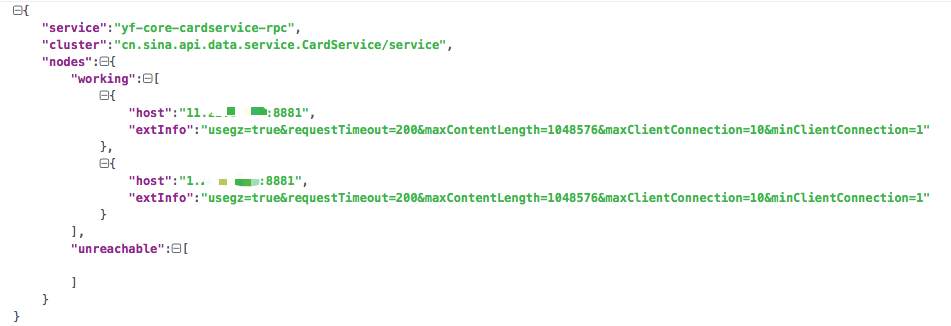
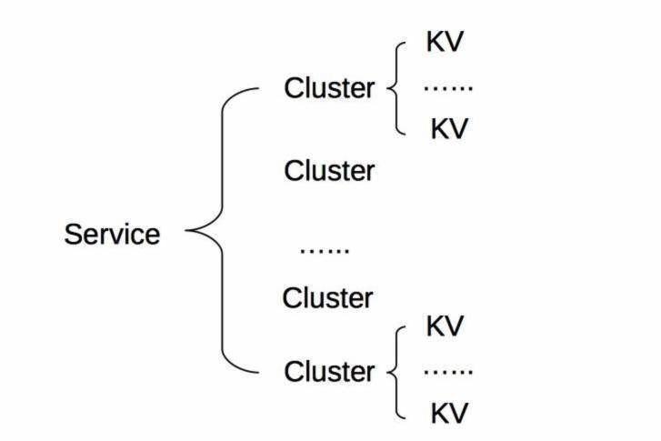
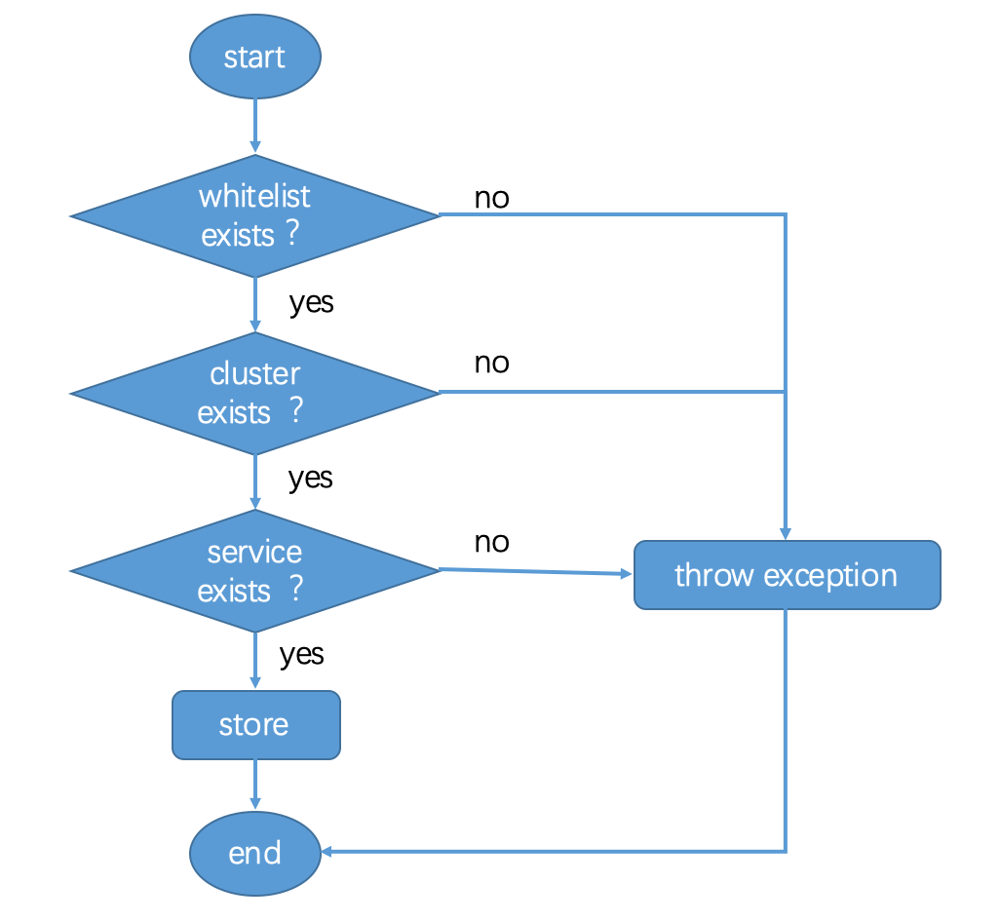
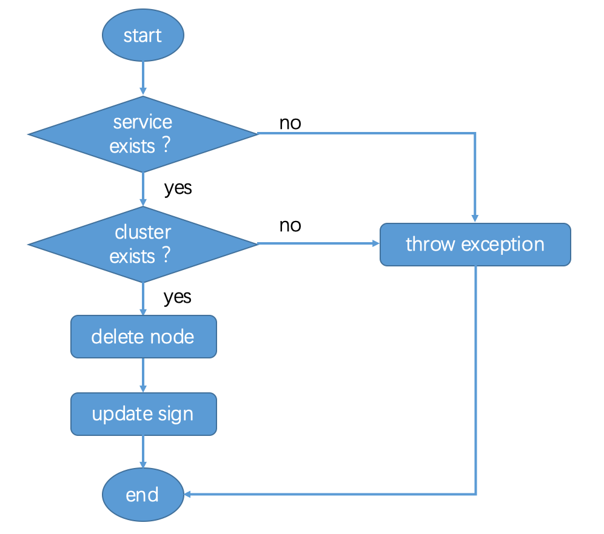
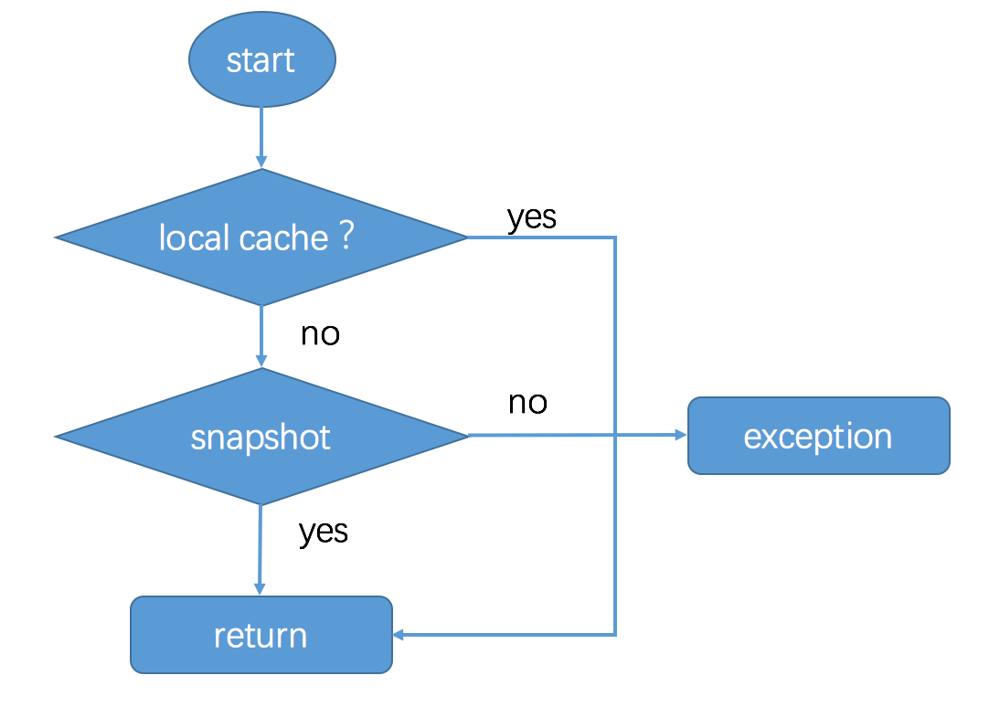
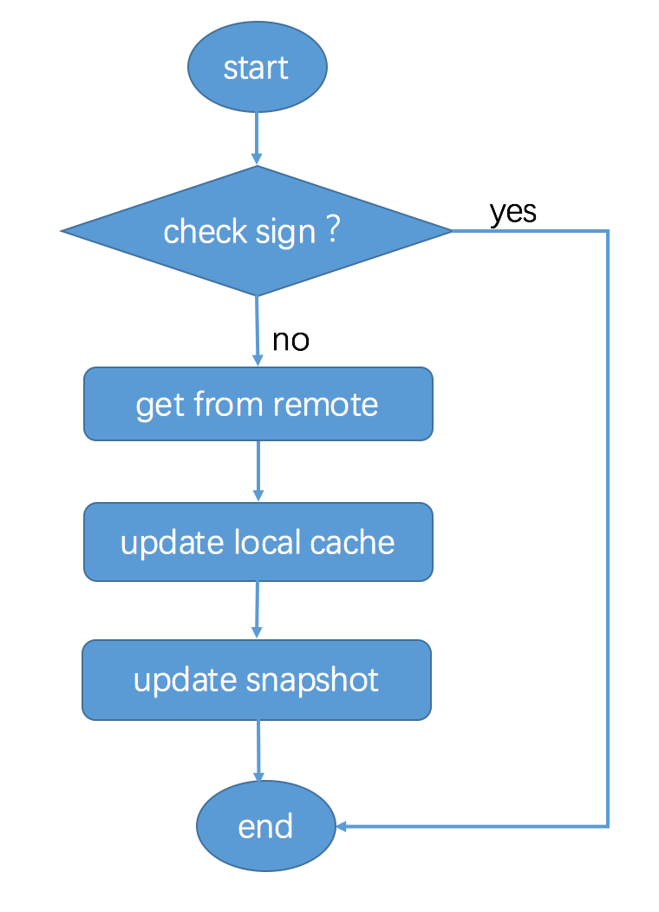

- 00 开篇词 微服务，从放弃到入门.md.html
- 01 到底什么是微服务？.md.html
- 02 从单体应用走向服务化.md.html
- 03 初探微服务架构.md.html
- 04 如何发布和引用服务？.md.html
- 05 如何注册和发现服务？.md.html
- 06 如何实现RPC远程服务调用？.md.html
- 07 如何监控微服务调用？.md.html
- 08 如何追踪微服务调用？.md.html
- 09 微服务治理的手段有哪些？.md.html
- 10 Dubbo框架里的微服务组件.md.html
- 11 服务发布和引用的实践.md.html
- 12 如何将注册中心落地？.md.html
- 13 开源服务注册中心如何选型？.md.html
- 14 开源RPC框架如何选型？.md.html
- 15 如何搭建一个可靠的监控系统？.md.html
- 16 如何搭建一套适合你的服务追踪系统？.md.html
- 17 如何识别服务节点是否存活？.md.html
- 18 如何使用负载均衡算法？.md.html
- 19 如何使用服务路由？.md.html
- 20 服务端出现故障时该如何应对？.md.html
- 21 服务调用失败时有哪些处理手段？.md.html
- 22 如何管理服务配置？.md.html
- 23 如何搭建微服务治理平台？.md.html
- 24 微服务架构该如何落地？.md.html
- 25 微服务为什么要容器化？.md.html
- 26 微服务容器化运维：镜像仓库和资源调度.md.html
- 27 微服务容器化运维：容器调度和服务编排.md.html
- 28 微服务容器化运维：微博容器运维平台DCP.md.html
- 29 微服务如何实现DevOps？.md.html
- 30 如何做好微服务容量规划？.md.html
- 31 微服务多机房部署实践.md.html
- 32 微服务混合云部署实践.md.html
- 33 下一代微服务架构Service Mesh.md.html
- 34 Istio：Service Mesh的代表产品.md.html
- 35 微博Service Mesh实践之路（上）.md.html
- 36 微博Service Mesh实践之路（下）.md.html
- 微博技术解密（上） 微博信息流是如何实现的？.md.html
- 微博技术解密（下）微博存储的那些事儿.md.html
- 结束语 微服务，从入门到精通.md.html
- 阿忠伯的特别放送 答疑解惑01.md.html
- 阿忠伯的特别放送 答疑解惑02.md.html
- 捐赠
12 如何将注册中心落地？
专栏第5期我给你讲了服务注册和发现的原理，这里面的核心是服务提供者、服务消费者和注册中心这三个概念，以及它们之间的交互关系。你可以先回顾一下这几个关键的知识点，如果有不清楚的地方，建议你先返回[第5期]复习一下，再开始今天的学习。
掌握了服务注册和发现的原理之后，我们就需要考虑如何把注册中心落地实现。结合前面所讲的服务注册与发现的流程，在落地注册中心的过程中，我们需要解决一系列的问题，包括如何存储服务信息、如何注册节点、如何反注册、如何查询节点信息以及如何订阅服务变更等。这些问题你都知道如何解决吗？如果还没答案，没关系，下面我来给你一一讲解。
注册中心如何存储服务信息
注册中心既然是用来存储服务信息的，那么服务信息都包含哪些内容呢？
根据我的实践经验，服务信息除了包含节点信息（IP和端口号）以外，还包含其他一些信息，比如请求失败时重试的次数、请求结果是否压缩等信息。因此服务信息通常用JSON字符串来存储，包含多个字段，每个字段代表不同的含义。
除此之外，服务一般会分成多个不同的分组，每个分组的目的不同。一般来说有下面几种分组方式。
核心与非核心，从业务的核心程度来分。
机房，从机房的维度来分。
线上环境与测试环境，从业务场景维度来区分。
所以注册中心存储的服务信息一般包含三部分内容：分组、服务名以及节点信息，节点信息又包括节点地址和节点其他信息。从注册中心中获取的信息结构大致如下图所示。

具体存储的时候，一般是按照“服务-分组-节点信息”三层结构来存储，可以用下图来描述。Service代表服务的具体分组，Cluster代表服务的接口名，节点信息用KV存储。

搞清楚了注册中心存储服务信息的原理后，再来看下注册中心具体是如何工作的，包括四个流程。
服务提供者注册流程。
服务提供者反注册流程。
服务消费者查询流程。
服务消费者订阅变更流程。
接下来，我来给你具体讲解上面四个流程的实现方式。
注册中心是如何工作的
1. 如何注册节点
知道了服务的节点信息如何存储之后，服务注册流程是怎么样的呢？可以用下面这张流程图来描述。

根据我的经验，服务注册流程主要有下面几个步骤：
首先查看要注册的节点是否在白名单内？如果不在就抛出异常，在的话继续下一步。
其次要查看注册的Cluster（服务的接口名）是否存在？如果不存在就抛出异常，存在的话继续下一步。
然后要检查Service（服务的分组）是否存在？如果不存在则抛出异常，存在的话继续下一步。
最后将节点信息添加到对应的Service和Cluster下面的存储中。
2. 如何反注册
再来看下服务提供者节点反注册的流程，可以用下面这张流程图来描述。

根据我的经验，节点反注册流程主要包含下面几个步骤：
查看Service（服务的分组）是否存在，不存在就抛出异常，存在就继续下一步。
查看Cluster（服务的接口名）是否存在，不存在就抛出异常，存在就继续下一步。
删除存储中Service和Cluster下对应的节点信息。
更新Cluster的sign值。
3. 如何查询节点信息
关于服务消费者是如何从注册中心查询服务提供者的节点信息，可以用下面这张流程图来描述。

服务消费者查询节点信息主要分为下面几个步骤：
首先从localcache（本机内存）中查找，如果没有就继续下一步。这里为什么服务消费者要把服务信息存在本机内存呢？主要是因为服务节点信息并不总是时刻变化的，并不需要每一次服务调用都要调用注册中心获取最新的节点信息，只需要在本机内存中保留最新的服务提供者的节点列表就可以。
接着从snapshot（本地快照）中查找，如果没有就继续下一步。这里为什么服务消费者要在本地磁盘存储一份服务提供者的节点信息的快照呢？这是因为服务消费者同注册中心之间的网络不一定总是可靠的，服务消费者重启时，本机内存中还不存在服务提供者的节点信息，如果此时调用注册中心失败，那么服务消费者就拿不到服务节点信息了，也就没法调用了。本地快照就是为了防止这种情况的发生，即使服务消费者重启后请求注册中心失败，依然可以读取本地快照，获取到服务节点信息。
4. 如何订阅服务变更
最后看下，服务消费者如何订阅服务提供者的变更信息呢？可以用下面这张流程图来描述。

主要分为下面几个步骤：
服务消费者从注册中心获取了服务的信息后，就订阅了服务的变化，会在本地保留Cluster的sign值。
服务消费者每隔一段时间，调用getSign()函数，从注册中心获取服务端该Cluster的sign值，并与本地保留的sign值做对比，如果不一致，就从服务端拉取新的节点信息，并更新localcache和snapshot。
这里小结一下，以上就是服务注册和反注册、服务查询和服务订阅变更的基本流程。除此之外，我再给你讲下我在实际项目实践中，实现服务注册与发现时遇到的几个问题，希望能给你帮助。
注册与发现的几个问题
1. 多注册中心
理论上对于一个服务消费者来说，同一个注册中心交互是最简单的。但是不可避免的是，服务消费者可能订阅了多个服务，多个服务可能是由多个业务部门提供的，而且每个业务部门都有自己的注册中心，提供的服务只在自己的注册中心里有记录。这样的话，就要求服务消费者要具备在启动时，能够从多个注册中心订阅服务的能力。
根据我的经验，还有一种情况是，一个服务提供者提供了某个服务，可能作为静态服务对外提供，有可能又作为动态服务对外提供，这两个服务部署在不同的注册中心，所以要求服务提供者在启动的时候，要能够同时向多个注册中心注册服务。
也就是说，对于服务消费者来说，要能够同时从多个注册中心订阅服务；对于服务提供者来说，要能够同时向多个注册中心注册服务。
2. 并行订阅服务
通常一个服务消费者订阅了不止一个服务，在我经历的一个项目中，一个服务消费者订阅了几十个不同的服务，每个服务都有自己的方法列表以及节点列表。服务消费者在服务启动时，会加载订阅的服务配置，调用注册中心的订阅接口，获取每个服务的节点列表并初始化连接。
最开始我们采用了串行订阅的方式，每订阅一个服务，服务消费者调用一次注册中心的订阅接口，获取这个服务的节点列表并初始化连接，总共需要执行几十次这样的过程。在某些服务节点的初始化连接过程中，出现连接超时的情况，后续所有的服务节点的初始化连接都需要等待它完成，导致服务消费者启动变慢，最后耗费了将近五分钟时间来完成所有服务节点的初始化连接过程。
后来我们改成了并行订阅的方式，每订阅一个服务就单独用一个线程来处理，这样的话即使遇到个别服务节点连接超时，其他服务节点的初始化连接也不受影响，最慢也就是这个服务节点的初始化连接耗费的时间，最终所有服务节点的初始化连接耗时控制在了30秒以内。
3. 批量反注册服务
通常一个服务提供者节点提供不止一个服务，所以注册和反注册都需要多次调用注册中心。在与注册中心的多次交互中，可能由于网络抖动、注册中心集群异常等原因，导致个别调用失败。对于注册中心来说，偶发的注册调用失败对服务调用基本没有影响，其结果顶多就是某一个服务少了一个可用的节点。但偶发的反注册调用失败会导致不可用的节点残留在注册中心中，变成“僵尸节点”，但服务消费者端还会把它当成“活节点”，继续发起调用，最终导致调用失败。
以前我们的业务中经常遇到这个问题，需要定时去清理注册中心中的“僵尸节点”。后来我们通过优化反注册逻辑，对于下线机器、节点销毁的场景，通过调用注册中心提供的批量反注册接口，一次调用就可以把该节点上提供的所有服务同时反注册掉，从而避免了“僵尸节点”的出现。
4. 服务变更信息增量更新
服务消费者端启动时，除了会查询订阅服务的可用节点列表做初始化连接，还会订阅服务的变更，每隔一段时间从注册中心获取最新的服务节点信息标记sign，并与本地保存的sign值作比对，如果不一样，就会调用注册中心获取最新的服务节点信息。
一般情况下，按照这个过程是没问题的，但是在网络频繁抖动时，服务提供者上报给注册中心的心跳可能会一会儿失败一会儿成功，这时候注册中心就会频繁更新服务的可用节点信息，导致服务消费者频繁从注册中心拉取最新的服务可用节点信息，严重时可能产生网络风暴，导致注册中心带宽被打满。
为了减少服务消费者从注册中心中拉取的服务可用节点信息的数据量，这个时候可以通过增量更新的方式，注册中心只返回变化的那部分节点信息，尤其在只有少数节点信息变更时，此举可以大大减少服务消费者从注册中心拉取的数据量，从而最大程度避免产生网络风暴。
总结
今天我给你讲解了在注册中心实际使用过程中，服务注册、服务反注册、服务订阅和服务变更的实现方式，并列举了几个我在服务注册与发现的过程中遇到的典型问题。
而针对这些异常情况，我都给出了对应的解决方案，这些方案都是经过实际业务验证的，对于大部分中小团队在应用场景面临的问题，应该足以应对。
思考题
你的团队在使用注册中心时，是否有遇到过上面这些问题呢？我给出的解决方案是否可以解决你们的问题呢？
欢迎你在留言区写下自己的思考，与我一起讨论。
© 2019 - 2023 Liangliang Lee. Powered by gin and hexo-theme-book.